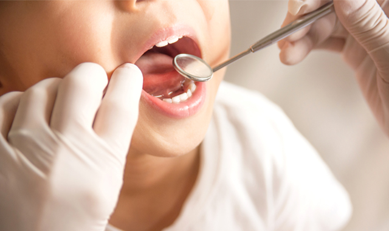
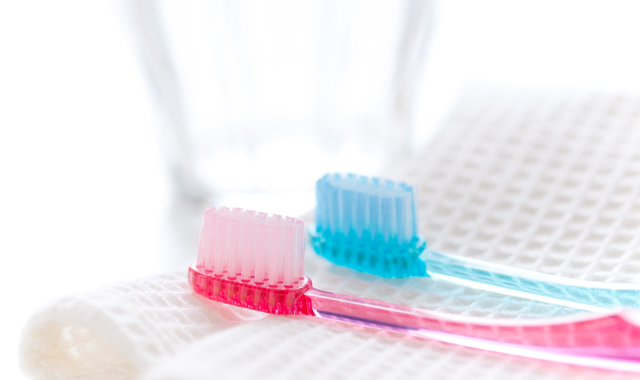
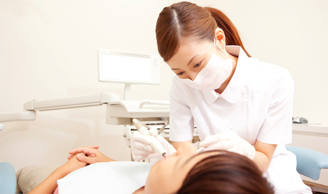
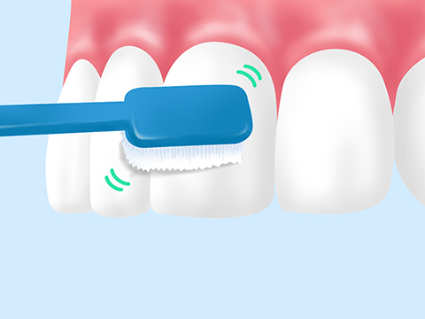
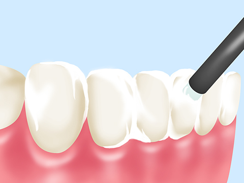
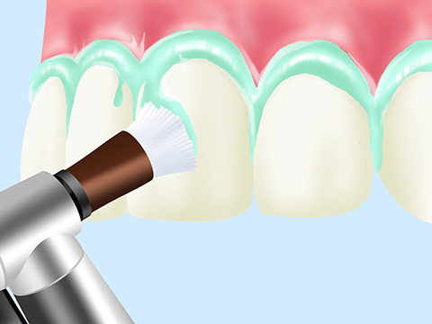
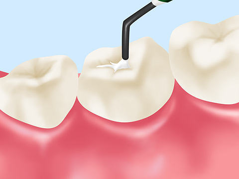
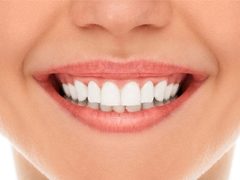
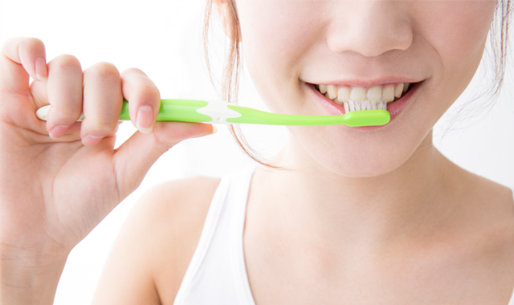

健康な歯で過ごしたい～予防歯科～
千歳船橋駅から徒歩3分の歯医者「中村歯科医院」では、予防歯科にも力を入れています。どんなに優れた人工歯でも、天然の歯に勝るものはありません。自分の歯でおいしい食事や楽しい会話ができるよう、口腔内の健康を意識することが大切です。むし歯にならないよう、日頃から歯を大切にしましょう。
予防歯科でいつまでも歯を大切に

予防歯科は口腔内の環境を良好な状態に保ち、むし歯になりにくい歯を作ることを目的にしています。個人差がありますが、一度むし歯になると治療に痛みを伴います。患者様の負担を抑え、健康な歯を長持ちさせるためにも、定期的なオーラルチェックによってむし歯や歯周病を予防しましょう。
予防歯科を受診するメリット
むし歯や歯周病予防には毎日のブラッシングが大切です。しかし、歯と歯の隙間や歯周ポケットの中など、どうしても磨き残しができてしまいます。そこで、定期的に当院の予防歯科をご利用ください。予防・メインテナンスを専門に行うプロである歯科衛生士が常駐し、口腔内のチェックやブラッシングの指導などを親切丁寧に行っています。
| 【メリット1】 むし歯・歯周病など口腔内のトラブルを未然に防ぐ |
【メリット2】 治療における負担を少なくできる |
|---|---|
| ブラッシングでは落としきれなかったプラークや歯石を取り除き、むし歯や歯周病を予防します。また、正しいブラッシングの方法もアドバイスいたします。 | むし歯や歯周病は初期の状態ならば、かんたんな治療と少ない通院回数で済みます。かかる手間や心身への負担に加え、医療費も大幅に抑えることができます。 |
| 【メリット3】 口腔内がスッキリすることでリフレッシュ |
【メリット4】 全身の健康維持にもつながる |
|---|---|
| 常駐の歯科衛生士による口腔内のチェックとクリーニングによって、歯の病気や口臭を抑えることができます。担当の歯科衛生士が患者様の口腔内の特徴を把握し、ご来院のたびに適切な処置を行います。歯の汚れを落とすとともに、スッキリとした気持ちになれるでしょう。 | 歯周病が進行すると歯周病菌が歯ぐきから血管に侵入。血流に乗って全身に回り、糖尿病や心疾患を発症する可能性を高めます。口腔内の環境を整えることは、全身の健康維持のためにも重要といえるのです。 |
定期検診の重要性

毎日しっかりとブラッシングされている方でも、歯の汚れを完全に落としきることはできません。わずかに残った食べかすからプラークがつくり出され、むし歯や歯周病の原因となってしまいます。当院ではみなさんのホームケアのフォローを行っています。ぜひ、定期検診にお越しください。

当院では担当衛生士制を採用しており、患者様一人につき専属の歯科衛生士がつきます。口腔内の変化を見逃すことなく、ブラッシングの指導や生活習慣改善のアドバイスもいたします。当院では2～6ヶ月ごとに定期検診を受けることをおすすめしています。千歳船橋駅から徒歩3分と駅からも近く、土曜日も診療しておりますので、お気軽にお越しください。
当院の予防歯科メニュー

ブラッシング指導
患者様の歯並びに合わせた適切なブラッシング方法をレクチャーします。磨き残しが多い場所を中心に磨き方をお教えしますので、ご自宅でのブラッシングにお役立てください。

フッ素塗布
むし歯菌への抵抗力を高める効果を持つフッ素を、歯に塗布します。お子さんの乳歯や生えたばかりの永久歯をむし歯から保護するのに効果的です。

PMTC
PMTCとは「プロフェッショナル・メカニカル・トゥース・クリーニング」の略で、専用の機械を使ってブラッシングでは落とせない箇所の汚れを取り除きます。歯の裏側や歯周ポケットなど、プラークの溜まりやすい場所を重点的にクリーニングし、歯の表面をきれいにします。歯がきれいになることで、汚れが付きにくくなるメリットもあります。

シーラント
お子さんの生え始めた永久歯に適用するむし歯予防措置です。6歳ごろに生えてくる奥歯（6歳臼歯）は溝が深く複雑な形状をしており、プラークなどが溜まりやすくなっています。永久歯の奥歯を歯科用プラスチックでコーティングすることで、むし歯などから守ることができます。

咬み合わせチェック
歯並びが乱れているとうまくブラッシングできず、歯の汚れが溜まりやすくなります。むし歯や歯周病になるリスクを高めてしまうので、定期検診にて咬み合わせのチェックを行いましょう。咬み合わせの調整や矯正歯科で対応できます。
生活習慣の指導
口腔内と全身の健康状態は密接に関わっています。慢性的な寝不足や喫煙などの習慣がある方には、歯科の観点から生活習慣の改善を指導させていただきます。ご自分の歯を長く使い続けるためにも、普段の生活習慣にも目を向けてみましょう。
院長からのメッセージ～ブラッシングの基本である歯ブラシ選びもお手伝いします～

むし歯や歯周病の予防には、毎日のブラッシングが欠かせません。当院では患者様一人ひとりのお口に合わせて、最適な歯ブラシの選び方をご提案いたします。歯ブラシの形状や毛質に至るまで細かくアドバイスいたしますので、お気軽にご相談ください。